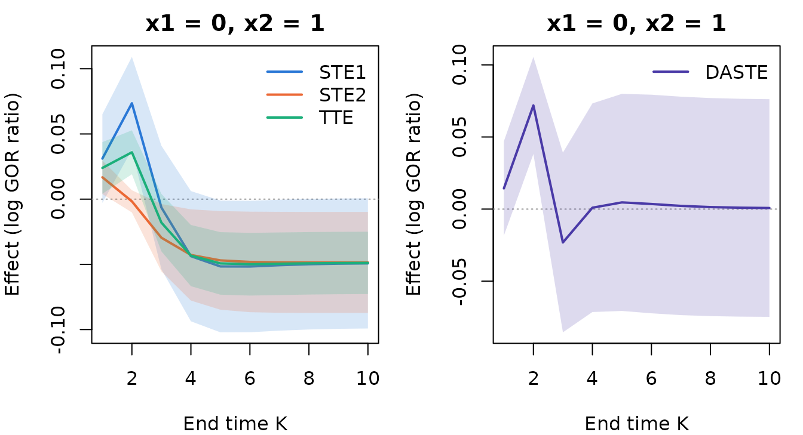

BiSCaL estimates and tests separable causal
treatment effects on two ordinal (including binary) responses
that are measured repeatedly in a longitudinal study, following Hu and
Yi (2026). This vignette introduces the framework and walks through an
analysis of the simulated trial simtrial that ships with
the package.
The framework in brief
Subjects are randomized to a treatment A \in \{0, 1\} and followed at visits k = 0, 1, \dots, K, where two responses Y_{1,k} and Y_{2,k} are recorded, Y_{1,k} before Y_{2,k}. In the motivating Lipid Research Clinics Coronary Primary Prevention Trial, Y_{1,k} indicates high HDL cholesterol and Y_{2,k} low LDL cholesterol. The two responses influence each other over time and depend on baseline covariates X.
The treatment is conceptualized as having two components: A_1, which acts on the first response, and A_2, which acts on the second (A = a corresponds to A_1 = A_2 = a). The effects are defined at the end time point K through the generalized odds ratio of the two responses under (A_1, A_2) = (a_1, a_2), given X = x:
GOR_K(a_1, a_2) = \frac{P(Y_1 \le y_1, Y_2 \le y_2)\, P(Y_1 > y_1, Y_2 > y_2)} {P(Y_1 \le y_1, Y_2 > y_2)\, P(Y_1 > y_1, Y_2 \le y_2)},
where Y_j = Y_{j,K}(a_1, a_2) are counterfactual responses and y_1, y_2 are thresholds (for binary responses, y_1 = y_2 = 0). A positive \log GOR means that the two responses tend to fall on the same side of their thresholds. Then
- the total treatment effect is TTE_K = \log\{GOR_K(1,1) / GOR_K(0,0)\};
- the separable treatment effect on response 1 changes only the component acting on it: STE_{1,K} = \log\{GOR_K(1,1)/GOR_K(0,1)\} + \log\{GOR_K(1,0)/GOR_K(0,0)\}, and STE_{2,K} is defined symmetrically;
- by Theorem 1 of the paper, STE_{1,K} + STE_{2,K} = 2\,TTE_K.
The arms (1, 0) and (0, 1) are never observed. They are
identified under conditional exchangeability, consistency, positivity
and a condition on the treatment components (Conditions 1–4 of the
paper). The identification is a recursive formula in the transition
probabilities of the responses. BiSCaL models these
probabilities with baseline-category logistic regressions, estimates
them by maximum likelihood (allowing for intermittent missingness and
censoring), and propagates them through the recursion.
The quantity used to compare the two responses is the difference of the absolute separable treatment effects, DASTE_K = |STE_{1,K}| - |STE_{2,K}|. A negative value means that the treatment affects the second response more than the first.
The data
simtrial is a simulated trial with 1000 subjects, a
baseline visit and ten follow-up visits. It has two binary responses, a
continuous covariate x1 and a binary covariate
x2. The data are in long format, one row per subject and
recorded visit:
head(simtrial, 12)
#> id visit trt x1 x2 y1 y2
#> 1 1 0 0 0.521 1 0 1
#> 2 1 1 0 0.521 1 1 1
#> 3 1 2 0 0.521 1 1 1
#> 4 1 3 0 0.521 1 1 NA
#> 5 1 4 0 0.521 1 1 1
#> 6 1 5 0 0.521 1 1 1
#> 7 1 6 0 0.521 1 1 1
#> 8 1 7 0 0.521 1 0 1
#> 9 1 8 0 0.521 1 NA 1
#> 10 1 9 0 0.521 1 1 1
#> 11 2 0 0 -1.080 0 0 0
#> 12 2 1 0 -1.080 0 0 0Missing responses are coded NA (intermittent
missingness). Subjects are followed until a censoring visit, after which
they have no rows:
table(simtrial$visit)
#>
#> 0 1 2 3 4 5 6 7 8 9 10
#> 1000 998 993 987 965 927 858 772 623 439 207The visit index must be 0 at baseline and
1, 2, ... at the scheduled follow-up visits. The treatment
and covariates must be constant within subjects.
Fitting the models
biscal() fits four regression models by maximum
likelihood:
- a transition model for each response, models (12) of the paper;
- a baseline model for each response, models (13) and (14).
The left-hand side of the formula lists the two responses, the one measured first at each visit first. The right-hand side lists the baseline covariates.
fit <- biscal(cbind(y1, y2) ~ x1 + x2, data = simtrial, id = "id",
time = "visit", treatment = "trt")
fit
#> Separable treatment effects for longitudinal bivariate responses (BiSCaL)
#>
#> Call:
#> biscal(formula = cbind(y1, y2) ~ x1 + x2, data = simtrial, id = "id",
#> time = "visit", treatment = "trt")
#>
#> Subjects: 1000 (treated 500, control 500); visits 0 to 10 (K = 10)
#> Treatment: trt (control = 0, treated = 1)
#> Responses: y1 [0 < 1] then y2 [0 < 1]
#> Follow-up: mean last visit 7.77; missing after baseline: y1 20.9%, y2 14.2%
#> Observations used: transitions y1 4511, y2 4700; baseline y1 1000, y2 1000
#> Log-likelihood: -4792.67 (df = 19)
#>
#> Coefficients:
#> Transition model for y1 (model (12), j = 1):
#> (Intercept) y1[k-1]=1 y2[k-1]=1 trt x1 x2
#> -0.5762 1.5984 1.1999 1.6199 0.4017 -0.5472
#> Transition model for y2 (model (12), j = 2):
#> (Intercept) y1[k]=1 y2[k-1]=1 trt x1 x2
#> -0.45450 0.88056 1.57409 0.22577 0.26392 0.08216
#> Baseline model for y1 (model (13)):
#> (Intercept) x1 x2
#> -0.05444 0.47013 -0.24870
#> Baseline model for y2 (model (14)):
#> (Intercept) y1[0]=1 x1 x2
#> -0.0786 0.9546 0.4048 0.3028A transition of the first response at visit k enters the likelihood when Y_{1,k}, Y_{1,k-1} and Y_{2,k-1} are all observed. A transition of
the second response enters when Y_{2,k}, Y_{2,k-1} and Y_{1,k} are observed (Section 4.2 of the
paper). summary() gives the coefficient tables, in the
format of Table 1 of the paper:
summary(fit)
#> Separable treatment effects for longitudinal bivariate responses (BiSCaL)
#>
#> Call:
#> biscal(formula = cbind(y1, y2) ~ x1 + x2, data = simtrial, id = "id",
#> time = "visit", treatment = "trt")
#>
#> Subjects: 1000 (treated 500, control 500); visits 0 to 10 (K = 10)
#> Treatment: trt (control = 0, treated = 1)
#> Responses: y1 [0 < 1] then y2 [0 < 1]
#> Follow-up: mean last visit 7.77; missing after baseline: y1 20.9%, y2 14.2%
#> Observations used: transitions y1 4511, y2 4700; baseline y1 1000, y2 1000
#> Log-likelihood: -4792.67 (df = 19)
#>
#> Transition model for y1 (model (12), j = 1):
#> Estimate Std. Error z value Pr(>|z|)
#> (Intercept) -0.57617 0.10007 -5.758 8.54e-09 ***
#> y1[k-1]=1 1.59836 0.09456 16.903 < 2e-16 ***
#> y2[k-1]=1 1.19990 0.09775 12.275 < 2e-16 ***
#> trt 1.61990 0.10569 15.327 < 2e-16 ***
#> x1 0.40168 0.05598 7.176 7.19e-13 ***
#> x2 -0.54721 0.09368 -5.842 5.17e-09 ***
#> ---
#> Signif. codes: 0 '***' 0.001 '**' 0.01 '*' 0.05 '.' 0.1 ' ' 1
#>
#> Transition model for y2 (model (12), j = 2):
#> Estimate Std. Error z value Pr(>|z|)
#> (Intercept) -0.45450 0.09783 -4.646 3.39e-06 ***
#> y1[k]=1 0.88056 0.09867 8.924 < 2e-16 ***
#> y2[k-1]=1 1.57409 0.08364 18.821 < 2e-16 ***
#> trt 0.22577 0.08574 2.633 0.00846 **
#> x1 0.26392 0.04791 5.509 3.61e-08 ***
#> x2 0.08216 0.08254 0.995 0.31953
#> ---
#> Signif. codes: 0 '***' 0.001 '**' 0.01 '*' 0.05 '.' 0.1 ' ' 1
#>
#> Baseline model for y1 (model (13)):
#> Estimate Std. Error z value Pr(>|z|)
#> (Intercept) -0.05444 0.08375 -0.650 0.5157
#> x1 0.47013 0.06911 6.803 1.03e-11 ***
#> x2 -0.24870 0.13322 -1.867 0.0619 .
#> ---
#> Signif. codes: 0 '***' 0.001 '**' 0.01 '*' 0.05 '.' 0.1 ' ' 1
#>
#> Baseline model for y2 (model (14)):
#> Estimate Std. Error z value Pr(>|z|)
#> (Intercept) -0.07860 0.10735 -0.732 0.4640
#> y1[0]=1 0.95459 0.14091 6.774 1.25e-11 ***
#> x1 0.40480 0.07319 5.531 3.19e-08 ***
#> x2 0.30276 0.14049 2.155 0.0312 *
#> ---
#> Signif. codes: 0 '***' 0.001 '**' 0.01 '*' 0.05 '.' 0.1 ' ' 1The treatment raises the chance of a high value of the first response considerably (coefficient 1.62), and of the second only slightly (0.23). Each response also depends strongly on its own previous value and on the other response.
Effects for given covariate values
aste() estimates the effects for covariate profiles
supplied in newdata. It computes delta-method standard
errors and tests H_0: DASTE_K \ge 0
against H_1: DASTE_K < 0 (Section
3.2.1 of the paper). As in Table 2 of the paper, we take the smallest
and the largest value of each covariate:
profiles <- data.frame(x1 = range(simtrial$x1), x2 = c(0, 1))
ind <- aste(fit, newdata = profiles)
ind
#> Separable treatment effects given covariate values (individual level)
#> Thresholds: y1 <= 0, y2 <= 0; Wald 95% confidence intervals
#>
#> Profile 1 (x1 = -3.048, x2 = 0), end time K = 10:
#> Estimate Std. Error Lower 95% Upper 95%
#> STE1 -0.03274 0.01746 -0.06697 0.001492
#> STE2 -0.003669 0.009454 -0.02220 0.01486
#> TTE -0.01820 0.008200 -0.03428 -0.002131
#> ASTE1 0.03274 0.01746 -0.001492 0.06697
#> ASTE2 0.003669 0.009454 -0.01486 0.02220
#> DASTE 0.02907 0.02280 -0.01562 0.07375
#> H0: DASTE >= 0 vs H1: DASTE < 0: z = 1.275, p-value = 0.899
#>
#> Profile 2 (x1 = 3.416, x2 = 1), end time K = 10:
#> Estimate Std. Error Lower 95% Upper 95%
#> STE1 -0.05311 0.01549 -0.08347 -0.02275
#> STE2 -0.05587 0.02281 -0.1006 -0.01116
#> TTE -0.05449 0.01123 -0.07650 -0.03248
#> ASTE1 0.05311 0.01549 0.02275 0.08347
#> ASTE2 0.05587 0.02281 0.01116 0.1006
#> DASTE -0.002758 0.03187 -0.06523 0.05971
#> H0: DASTE >= 0 vs H1: DASTE < 0: z = -0.08654, p-value = 0.466A negative separable effect means that the corresponding treatment component lowers the log generalized odds ratio. All estimated generalized odds ratios here exceed one (see below), so a negative effect weakens the positive association of the two responses at the last visit.
- For the smallest covariate values, STE_1 is estimated at -0.033, but its confidence interval includes zero.
- For the largest values, STE_1 (-0.053) and STE_2 (-0.056) are both negative and of similar size.
The test of the paper, whose alternative is that the treatment
affects the second response more, is far from significant for both
profiles (p = 0.9 and 0.47). The opposite direction can be tested with
alternative = "greater":
aste(fit, newdata = profiles, alternative = "greater")$test
#> profile K estimate std.error statistic p.value
#> 1 1 10 0.029067906 0.02279804 1.2750175 0.1011515
#> 2 2 10 -0.002758293 0.03187198 -0.0865429 0.5344826The results are also available as data frames, together with the underlying generalized odds ratios:
head(as.data.frame(ind))
#> profile K effect estimate std.error conf.low conf.high
#> 1 1 10 STE1 -0.032736899 0.017463825 -0.066965366 0.001491568
#> 2 1 10 STE2 -0.003668993 0.009454170 -0.022198826 0.014860841
#> 3 1 10 TTE -0.018202946 0.008200338 -0.034275313 -0.002130578
#> 4 1 10 ASTE1 0.032736899 0.017463825 -0.001491568 0.066965366
#> 5 1 10 ASTE2 0.003668993 0.009454170 -0.014860841 0.022198826
#> 6 1 10 DASTE 0.029067906 0.022798044 -0.015615440 0.073751252
as.data.frame(ind, what = "gor")[1:4, ]
#> profile K a1 a2 gor
#> 1 1 10 1 1 3.665858
#> 2 1 10 1 0 3.664201
#> 3 1 10 0 1 3.717846
#> 4 1 10 0 0 3.733198Effects over follow-up
A vector K gives the effects at several end time points.
Their curves show how the effects build up over the visits:
path <- aste(fit, newdata = data.frame(x1 = 0, x2 = 1), K = 1:10)
op <- par(mfrow = c(1, 2), mar = c(4, 4, 2, 1))
plot(path)
plot(path, effects = "DASTE")
par(op)The effects change over the first few visits and then stabilize, as the transitions settle into their long-run behavior.
Population-level effects
easte() averages the effects over a distribution of the
covariates. It estimates the expected absolute separable treatment
effects EASTE_{j,K} = E|STE_{j,K}(X)|
and their difference DEASTE_K, with a
Wald test (Section 3.2.2 of the paper). By default, the average is over
the covariates of the subjects in the data. The standard errors then
include the sampling variability of the covariates.
pop <- easte(fit)
pop
#> Separable treatment effects averaged over covariates (population level)
#> Average over 1000 rows of the covariates of the fitted data
#> Thresholds: y1 <= 0, y2 <= 0; Wald 95% confidence intervals
#> Standard errors include the sampling variability of the covariates
#>
#> End time K = 10:
#> Estimate Std. Error Lower 95% Upper 95%
#> ESTE1 -0.06862 0.02125 -0.1103 -0.02696
#> ESTE2 -0.04283 0.01739 -0.07691 -0.008757
#> ETTE -0.05573 0.01040 -0.07612 -0.03534
#> EASTE1 0.06868 0.02122 0.02710 0.1103
#> EASTE2 0.04283 0.01739 0.008757 0.07691
#> DEASTE 0.02585 0.03276 -0.03835 0.09005
#> H0: DEASTE >= 0 vs H1: DEASTE < 0: z = 0.7892, p-value = 0.785Averaged over the participants, both separable effects are negative: the treatment weakens the (positive) association of the two responses through both of its components. The weakening is stronger through the component acting on the first response (EASTE_1 = 0.069 against EASTE_2 = 0.043). The difference is not statistically significant (two-sided p-value 0.43).
The paper instead averages over a large number of draws from a model
for the covariate distribution: a Gaussian mixture for the continuous
covariates within groups defined by the discrete ones. Any such model
can be used by passing the draws as newdata. Here is a
simple version, with x2 drawn from its observed frequency
and x1 from a normal distribution within each level of
x2:
base <- unique(simtrial[, c("id", "x1", "x2")])
set.seed(1)
M <- 5000
x2 <- rbinom(M, 1, mean(base$x2))
mu <- tapply(base$x1, base$x2, mean)
sdev <- tapply(base$x1, base$x2, sd)
draws <- data.frame(x1 = rnorm(M, mu[x2 + 1], sdev[x2 + 1]), x2 = x2)
easte(fit, newdata = draws)$effects
#> K effect estimate std.error conf.low conf.high mc_se
#> 1 10 ESTE1 -0.06892773 0.02116115 -0.110402822 -0.027452645 0.0003090721
#> 2 10 ESTE2 -0.04267381 0.01731911 -0.076618651 -0.008728968 0.0001262015
#> 3 10 ETTE -0.05580077 0.01035888 -0.076103795 -0.035497747 0.0001717064
#> 4 10 EASTE1 0.06899596 0.02108905 0.027662179 0.110329740 0.0003060117
#> 5 10 EASTE2 0.04267643 0.01732027 0.008729326 0.076623541 0.0001260239
#> 6 10 DEASTE 0.02631953 0.03259096 -0.037557583 0.090196636 0.0003222379With supplied draws, the standard errors treat the covariate
distribution as known, as in the authors’ implementation. The variance
formula of the paper also includes the uncertainty of the estimated
covariate model, which is therefore not reflected here. The column
mc_se gives the Monte Carlo error of the average.
Counterfactual distributions
cf_prob() returns the joint distribution of the two
responses under any combination of the treatment components, and
gor() the generalized odds ratios:
pr <- cf_prob(fit, newdata = data.frame(x1 = 0, x2 = 1), a1 = 1, a2 = 0)
round(pr[1, , , 1], 3)
#> y2
#> y1 0 1
#> 0 0.022 0.036
#> 1 0.141 0.801
gor(fit, newdata = data.frame(x1 = 0, x2 = 1), a1 = c(1, 1, 0, 0), a2 = c(1, 0, 1, 0))
#> profile K a1 a2 gor
#> 1 1 10 1 1 3.389511
#> 2 1 10 1 0 3.461436
#> 3 1 10 0 1 3.462722
#> 4 1 10 0 0 3.559347Ordinal responses
Responses with more than two ordered categories are handled in the
same way: models (12)–(14) become baseline-category logistic
regressions, with dummy codes of the previous responses. The thresholds
y1 and y2 choose where the responses are
dichotomized in the generalized odds ratio. To illustrate, we simulate
three-category responses from coefficient matrices with one column per
non-reference category:
mk <- function(v, terms) matrix(v, ncol = 2, dimnames = list(terms, c("1", "2")))
co <- list(
beta1 = mk(c(-0.5, 1.2, 2.0, 0.3, 0.5, 0.8, 0.4, -1.0, 0.8, 2.5, 0.2, 0.9, 0.2, 0.3),
c("(Intercept)", "y1[k-1]=1", "y1[k-1]=2", "y2[k-1]=1", "y2[k-1]=2", "trt", "x")),
beta2 = mk(c(-0.3, 0.5, 0.9, 1.5, 2.2, -0.4, 0.2, -0.8, 0.7, 1.4, 1.0, 2.8, 0.6, -0.2),
c("(Intercept)", "y1[k]=1", "y1[k]=2", "y2[k-1]=1", "y2[k-1]=2", "trt", "x")),
gamma1 = mk(c(0.2, 0.5, -0.3, 0.4), c("(Intercept)", "x")),
gamma2 = mk(c(0.1, 0.8, 1.2, 0.3, -0.5, 0.4, 1.5, -0.2),
c("(Intercept)", "y1[0]=1", "y1[0]=2", "x")))
d3 <- simulate_biscal(n = 2000, K = 5, coefs = co, missing = TRUE, seed = 1)
fit3 <- biscal(cbind(y1, y2) ~ x, data = d3, id = "id", time = "visit",
treatment = "trt")
aste(fit3, newdata = data.frame(x = 0), y1 = 1, y2 = 0)
#> Separable treatment effects given covariate values (individual level)
#> Thresholds: y1 <= 1, y2 <= 0; Wald 95% confidence intervals
#>
#> Profile 1 (x = 0), end time K = 5:
#> Estimate Std. Error Lower 95% Upper 95%
#> STE1 -0.1909 0.07667 -0.3412 -0.04066
#> STE2 0.3889 0.09238 0.2078 0.5699
#> TTE 0.09897 0.05931 -0.01727 0.2152
#> ASTE1 0.1909 0.07667 0.04066 0.3412
#> ASTE2 0.3889 0.09238 0.2078 0.5699
#> DASTE -0.1979 0.1186 -0.4304 0.03454
#> H0: DASTE >= 0 vs H1: DASTE < 0: z = -1.669, p-value = 0.0476In this design, the two treatment components act in opposite directions: STE_1 is negative and STE_2 positive, so the total effect is small.
The LRC-CPPT analysis of the paper
The data of the Lipid Research Clinics Coronary Primary Prevention
Trial are available from BioLINCC (https://biolincc.nhlbi.nih.gov/studies/lrccppt/) on
request. They cannot be distributed with the package, so the code below
is not run here. Suppose cppt holds the data in long
format, prepared as described in Section 5.1 of the paper. It has one
row per subject and visit, with visit = 0 at the visit when
the medication was dispensed, the binary responses hdl_high
(HDL at least 60 mg/dL) and ldl_low (LDL below 130 mg/dL),
the treatment trt and the eight baseline covariates. The
analyses of Tables 1 to 3 are then:
f <- cbind(hdl_high, ldl_low) ~ BMI + EDUC + EVDNK + EVSMK + PHYSA + PHYSB + RACE + V5AGE
fit <- biscal(f, data = cppt, id = "ID", time = "visit", treatment = "trt")
summary(fit) # Table 1
# Table 2: smallest and largest value of each covariate (Situations 1 and 2)
covs <- fit$covariate_data
situations <- as.data.frame(rbind(sapply(covs, min), sapply(covs, max)))
aste(fit, newdata = situations)
# Table 3: within a group defined by the discrete covariates, a Gaussian
# mixture for (BMI, V5AGE), here with two components
library(mixtools)
grp <- with(covs, EDUC == 0 & EVDNK == 1 & EVSMK == 1 & PHYSA == 0 & PHYSB == 0 &
RACE == 1)
set.seed(1)
gm <- mvnormalmixEM(as.matrix(covs[grp, c("BMI", "V5AGE")]), k = 2)
rgmm <- function(M, gm) { # draws from the fitted mixture
comp <- sample(length(gm$lambda), M, replace = TRUE, prob = gm$lambda)
out <- matrix(NA_real_, M, length(gm$mu[[1]]))
for (j in seq_along(gm$lambda)) {
idx <- which(comp == j)
z <- matrix(rnorm(length(idx) * ncol(out)), ncol = ncol(out))
out[idx, ] <- sweep(z %*% chol(gm$sigma[[j]]), 2, gm$mu[[j]], "+")
}
out
}
xy <- rgmm(100000, gm)
draws <- data.frame(BMI = xy[, 1], EDUC = 0, EVDNK = 1, EVSMK = 1, PHYSA = 0,
PHYSB = 0, RACE = 1, V5AGE = xy[, 2])
easte(fit, newdata = draws)Practical notes
- Assumptions. The causal interpretation rests on Conditions 1–4 of the paper. Validity under missingness and censoring rests on Conditions AC1 and AC2: given the treatment, the covariates and the previous responses, censoring and missingness carry no further information about the current response. Condition 4 concerns the treatment components and cannot be tested when only the combined treatment is given.
- Time homogeneity. The transition models are common to all visits, so the visits should be equally spaced (or at least have comparable dynamics).
-
Separation. Binary or ordinal regressions can
separate: a category may be (almost) perfectly predicted, for example a
baseline response that is nearly constant because of inclusion criteria.
biscal()then warns about very large standard errors. The affected probabilities are estimated as practically 0 or 1. - Standard errors use the delta method of the paper, with numerical derivatives as in the authors’ implementation. The absolute values in ASTE are differentiated through the sign of STE, so tests of DASTE are unreliable when an STE is close to zero relative to its standard error.
Reference
Hu, P. and Yi, G. Y. (2026). Inference about separable causal effects with longitudinal bivariate ordinal responses with missingness and censoring. Statistics in Medicine, 45, e70320. https://doi.org/10.1002/sim.70320